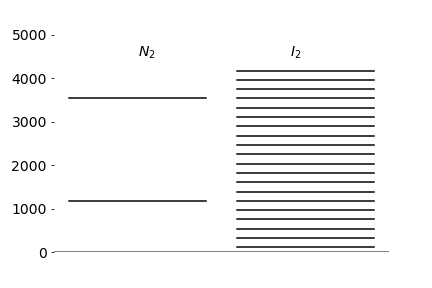

Questions 1 - 13¶
Q1 Exponential series¶
The exponential series is \(\displaystyle e^x = 1+x + x^2/2!+x^3/3! + \cdots \), find the values of \(x\) for which this series is convergent
Q2 Expansion¶
What is the expansion of \(1/(1+ax)^3\) ?
Strategy: start with an expression for which a series is known and repeatedly differentiate if necessary to make the function required).
Q3 Atomic weight¶
Calculate the atomic weight of lead and its standard deviation using the data below, which is taken from the NIST data handbook ( www.physics.nist.gov/PhysRefData ).
Q4 Averages of dice¶
If, in one experiment, a die is repeatedly thrown and then in another experiment two are repeatedly thrown, calculate the expected (average) value of the number on the die face \(\langle x \rangle\), and also \(\langle x^2 \rangle\) and \(\sigma\) in both experiments.
(a) Compare the averages and standard deviations in both cases.
(b) In the second case, write down in mathematical notation a summation formula for \(\langle x \rangle\) and calculate its value. (Using a computer algebra programme makes this much easier).
Q5 Averages¶
Repeat the previous calculation for ten-sided dice with numbers \(0 \to 9\). This is effectively estimating the average value of a random digit.
Q6 Partition function (i)¶
Assuming that Boltzmann’s distribution applies, calculate the partition function \(Z\),
(a) for a beam of \(n\) photons of frequency \(\nu \, \mathrm{s^{-1}}\) and energy \(E_n = nh\nu\).
(b) for a harmonic oscillator where \(E_n = h\nu(n + 1/2)\). The vibrational quantum number is \(n\), the vibrational frequency \(\nu\,\mathrm{ s^{-1}}\).
(c) Calculate the relative population of the first five levels for N\(_2\) and I\(_2\) given that the vibrational temperatures \(\theta = hν/k_B\) are \(3394.6\) and \(308.7\) K respectively. Assume \(T = 300\) K.
Q7 Partition function (ii)¶
Using the data in the previous question, work out at a given temperature
(a) The average number of photons \(\langle n \rangle \).
(b) The average number of quanta \(\langle n \rangle\) in a harmonic oscillator.
(c) Use data for N\(_2\) and I\(_2\) from the previous question to calculate the average number of vibrational levels populated at room temperature. Give a reasoned argument to explain what you think will be the effect on \(\langle n \rangle\) of making the potentials for these molecules anharmonic, such as Morse potentials.
Strategy: Starting with equation (6), work out what \(x\) is and then the probability distribution \(p(x)\). Write down the partition function and then \(xp(x)\) and simplify or rearrange before trying to sum.

Figure 2. Vibrational energy levels for N\(_2\) and I\(_2\) harmonic oscillators
Q8 Find ethylene’s missing vibrational frequency¶
In this question, an unknown vibrational frequency \(\nu_4\) will be found by combining spectroscopic and thermodynamic data.
The classical energy of a molecule comprises at term \(k_BT/2\) for each ‘squared’ or quadratic term in the calculation of the energy; this is known as the equipartition theorem. Therefore, for translation in each of the \(x-,\; y-\) or \(z-\)directions and each of the rotations about these axes and amount \(k_BT/2\) is added to the energy. (Note that a linear molecule only has moments of inertia about 2 axes.) This limit is true provided the temperature \(T \ge h\nu/k_B\) where \(\nu\) is the quantum and \(k_B\) is Boltzmann’s constant, and applies to translations at all temperatures and rotations for most molecules above \(\approx 10\) K.
Classically, each vibration also contributes \(k_BT\), which is a term \(k_BT/2\) for the vibrational potential energy, as this varies as bond extension squared. However, at room temperature, the classical limit is not reached for vibrations and instead the total quantized vibrational energy for all \(n\) normal modes contributes
to the heat capacity.
The ‘vibrational temperature’ for mode \(i\) is \(\theta_i = h\nu_i /k_B\) where \(\nu_i\) the vibrational frequency. Ethylene \(\mathrm{CH_2=CH_2}\) has one twisting vibrational normal mode \(\nu_4\) of A\(_u\) symmetry species that is neither infrared nor Raman active, and is therefore invisible to spectroscopic methods. This occurs because the molecule has a centre of symmetry and hence no symmetric vibration can be IR active (no changing dipole) and no anti-symmetric vibration Raman active (no change in polarisability). This is true for any molecule in a point group containing a centre of inversion.
The heat capacity at constant pressure has been measured calorimetrically to be \(4.37\,\mathrm{ k_BT}\) at \(211\) K.
(a) Explain why there are twelve normal mode vibrations.
(b) Show that ethylene belongs to the D\(_{2h}\) point group and that only normal modes belonging to the A\(_u\) symmetry species are both IR and Raman inactive.
(c) Calculate the vibrational contribution to the heat capacity from the partition function, and show that it has the form given above for each mode. The vibrational partition function \(Z\) for a harmonic oscillator is calculated in Q6 and where \(C_V=dE_{vib}/dT\) and
(d) How are \(C_V\) and \(C_p\) related?
(e) Calculate the frequency \(\nu_4\) using the following data.
Vibrational normal mode frequencies for ethylene \(\mathrm{C_2H_4}\) in (cm\(^{-1}\)).
Strategy: Find \(C_V\) for the vibrations and add terms for the rotations and translations at their classical limit. Look up how \(C_V\) and \(C_p\) differ. Compare the calculated \(C_p\) with the experimental value. Work out the summation, then isolate the term due to the unknown vibrational frequency and solve this equation for the A\(_u\) frequency.
Q9 Ensemble average¶
The average energy of an ensemble (i.e. group) of molecules is given by \(\langle E \rangle\). Each molecule is in an energy level with value \(E\) and these levels are discrete because the molecules obey the laws of quantum mechanics. The energies are \(E = 0, 1, 2, \cdot, \;\infty\).
(a) Calculate \(\langle E \rangle\) and show that at low temperatures it has a value of zero but at high temperatures \(\langle E \rangle = k_BT\). What is a high temperature in this context?
(b) Calculate \(\langle E^2 \rangle \) and find its value at high and low temperatures.
(c) Obtain a formula for the ratio \(\sigma_E /\langle E \rangle\) where \(\sigma_E\) is the standard deviation of the energy, its square is the variance defined as \(\sigma_E^2 = \langle E^2 \rangle - \langle E \rangle^2\).
(d) Comment on the formula obtained as the temperature is changed.
(e) Using the fact that the heat capacity \(C_V = \partial \langle E \rangle /\partial T\) , show that \(\sigma_E^2 = k_BT^2C_V\).
Strategy: This is a long question, so split it into smaller parts. Start by writing down the formulae needed and look up the summations in the table, or use computer algebra (SymPy or Maple) to do them for you. The answer to part of the first question is given in the text.
Q10 Where is energy zero ?¶
A sample of CHCl\(_3\) is placed in an NMR spectrometer with a magnetic field of intensity \(B\) tesla. The energy (in joules) of the \(^1\)H nuclei is given by \(E_m = -\gamma m\hbar B\) where \(\gamma\) is the magneto-gyric ratio, which is positive and describes how strongly the nuclei interact with the field, and \(m\) is the spin quantum number along the direction of the magnetic field which, for a spin \(1/2\) nucleus, has only the values \(m = \pm 1/2\). The lowest energy state is that which aligns itself with the magnetic field and has \(m = 1/2\) and is the state in which the molecule is more likely to be found.
This problem illustrates a subtle and possibly misleading effect when summing quantum numbers and energies not originating at zero.
(a) What is the energy gap \(\Delta E\) responsible for the NMR transition and how does it compare to thermal energy at room temperature?
(b) Using the Boltzmann distribution, derive equations for \(\langle E \rangle\) and \(\langle E^2 \rangle\). Derive the low and high temperature limits. Do they make sense? Move the zero of energy to the lowest level (see figure in answers) and repeat the calculation.
(c) Calculate also exact values at \(10\) K and \(300\) K using the values \(\gamma = 26.7 \cdot 10^7\,\mathrm{ rad \, T^{-1}\, s^{-1}}\) ( value for the \(^1\)H nuclei ) and \(B = 10\) T (SI unit T = tesla) and room temperature.
Q11 Nuclear spin and rotational spectrum¶
In a homonuclear diatomic molecule, nuclear spin plays an important part in determining which molecular rotational energy levels are present because the nuclei are indistinguishable. Because of this indistinguishability, the nuclear wavefunctions must consist of linear combinations of individual wavefunctions that are either symmetric or antisymmetric to exchange of coordinates. If the nuclear spin is an integer or zero, the nuclear wavefunction has symmetrical nuclear states and the molecule is therefore a boson. However, the total wavefunction must be asymmetrical overall (Pauli Principle) since it is the product of nuclear spin and rotational parts. If the nuclear spin has a half-integer value the molecule is a fermion and the total wavefunction must be asymmetrical to exchange.
Molecular hydrogen H\(_2\) has two protons each with nuclear spin quantum number of \(1/2\) and exists as two forms; ortho- and para - hydrogen. In ortho-hydrogen molecules, the nuclear spins are parallel, giving total spin quantum number of \(S = 1\) and magnetic spin numbers of \(1, 0, -1\). Because the total quantum number is one, there are \(2S + 1 = 3\) symmetric nuclear spin combinations and the molecule therefore only exists in anti-symmetric rotational states, such as those with odd \(J\) quantum numbers. The three nuclear levels are degenerate so the molecule exists in three ground states.
Para-hydrogen has opposed nuclear spins, with total spin quantum number \(S = 0\), and magnetic spin quantum number of zero, and an asymmetrical nuclear spin wavefunction with symmetric rotational spin wavefunctions, \(J = 0, 2, 4, \cdots\) and so forth.
If \(S\) is the nuclear spin quantum number, \(g = 2S + 1\) is the nuclear spin multiplicity and these levels are degenerate. The total partition function for half-integer spin states is \(Z = Z_{para} + Z_{ortho}\) where
notice how only odd or even states are summed.
The fraction \(g ( g - 1)/2\) represents the number of asymmetrical nuclear spins states and \(g ( g + 1)/2 \) those of the symmetrical spin states. The total number of spin states is \(g^2\).
(a) Calculate the total degeneracy of the \(J\)th rotational level with ortho - and with para - nuclei. Calculate and plot the equilibrium fraction of ortho - molecules present in H\(_2\) with temperature. The rotational constant is \(60.8 \,\mathrm{cm^{-1}}\). Calculate the composition at room temperature, say \(300\) K, and at the normal boiling temperature of \(20.4\) K.
(b) Calculate how the rotational contribution to the total heat capacity varies with temperature. Explain the shape of the heat capacity curve.
(c) The heat of vaporization of liquid H\(_2\) is \(0.904\,\mathrm{ kJ \,mole^{-1}}\). What would be the consequence of spontaneous conversion of a mole of liquid H\(_2\) at its room temperature composition of ortho- to para- molecules but at its boiling point? Consequently, explain why it is necessary to catalyse the conversion from ortho- to para- before it is cooled and put into a cryostat as liquid H\(_2\).
Strategy: Calculate the ortho- and para- series separately but with only alternate odd or even terms. At equilibrium the fraction of ortho-hydrogen present is \(Z_{ortho} /(Z_{ortho} + Z_{para})\). The heat capacity is the rate of change of internal energy with temperature, so it is necessary to find the relationship between the partition function and internal energy. Look this up in your textbook.
Q12 Enzymes cutting up DNA¶
Type II restriction enzymes are used by bacteria to inactivate viral DNA by identifying then cutting out specific sequences usually \(n = 4, 6\), or \(8\) base pairs long; these are called ‘words’. The bacteria’s own DNA is protected from this enzyme by methylation. The resulting distribution of shorter segments of DNA can be used as a DNA fingerprint if the fragments are cloned so that there is enough material to be characterized, for example, by gel electrophoresis.
Assuming that the four base pairs occur with equal probability, the fraction \(1/4n\) is the probability of reading the correct \(n\) letter word that leads to DNA scission. The enzyme then moves along the DNA to read the next word.
(a) Convince yourself that the probability of an enzyme not starting a new word after \(L - 1\) moves along the DNA but starting one at move \(L\) is the (geometric) distribution
(b) Is this distribution normalized?
(c) Show that the mean distance to the next word is approximately 4\(n\) base pairs.
Strategy: Think about the chance that one word is read and then not read and recall that probabilities multiply.
Q13 Falling ball¶
A ball that is initially stationary is dropped from a height \(h\). Its position \(y\) at time \( t\) is \(\displaystyle y = -gt^2/2 + h\) if its motion is not impeded by friction due to the viscosity of the air. The mass of the ball is \(m,\, g\) the acceleration due to gravity, and \(h\) the initial height. The equation describing the balance of forces is
The similar equation including friction from the air, which is proportional to velocity, is
where \(c\) is a constant. The solution to this equation is
Show that this solution reduces to that of the first when \(c=0\).